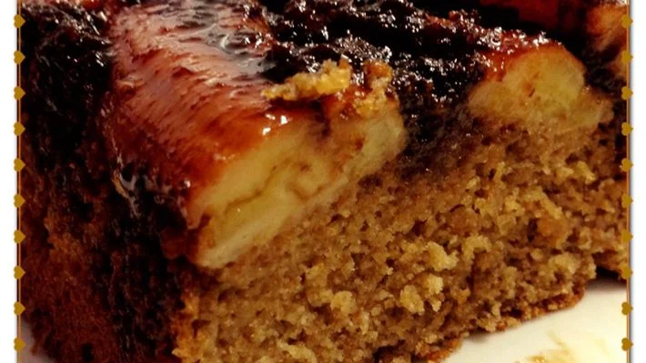

Bolo integral de banana

INGREDIENTES
- 4 ovos inteiros
- 6 bananas caturra cortadas em rodelas
- 1/2 xícara de chá de óleo de canola
- 1/2 xícara de leite desnatado
- 1 xícara de chá de farinha de trigo integral
- 1 xícara de chá de aveia
- 2 xícaras de chá, não muito cheias, de açúcar mascavo.
- canela para salpicar
- 1 colher de sopa de fermento em pó
MODO DE PREPARO
- Bata todos os ingredientes no liqüidificadorcom apenas 1 banana
- Coloque em forma untada com óleo e farinha.
- Ponha as rodelas de banana sobre essa massa e salpique com canela.
- Assar em forno pré-aquecido, a 180° por aproximadamente 50 minutos.
INFORMAÇÕES ADICIONAIS
A banana caturra é conhecida em algumas regiões por banana nanica